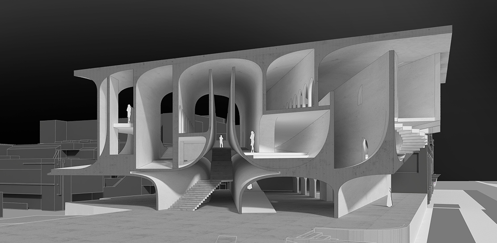
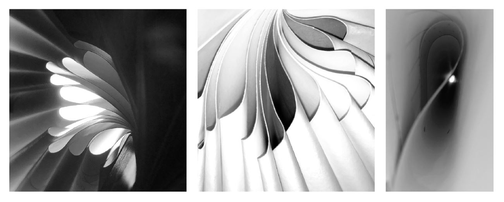
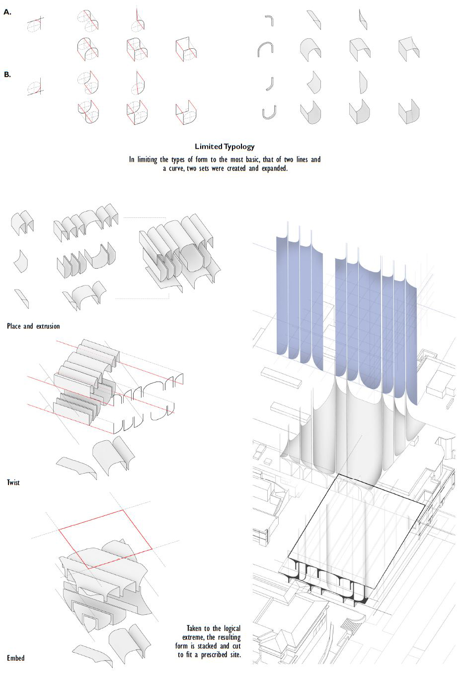
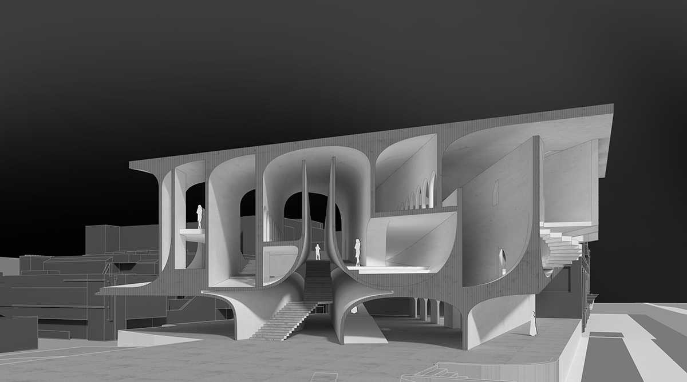
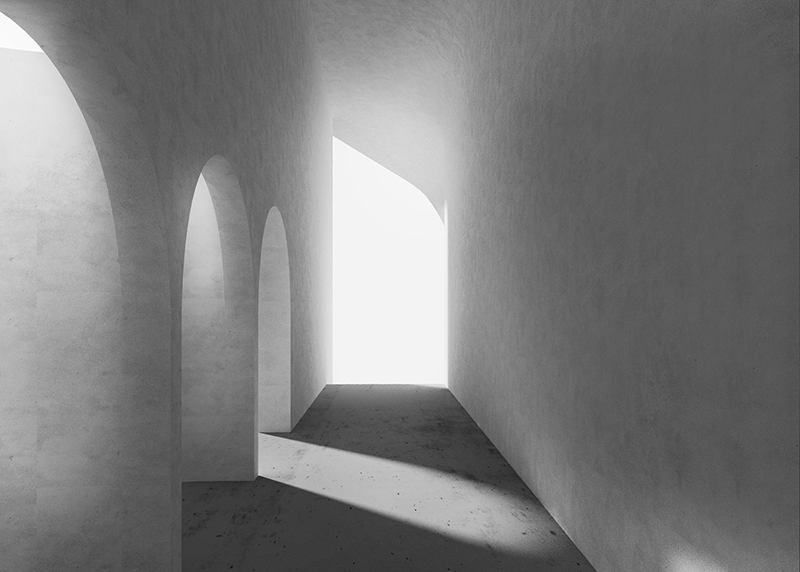
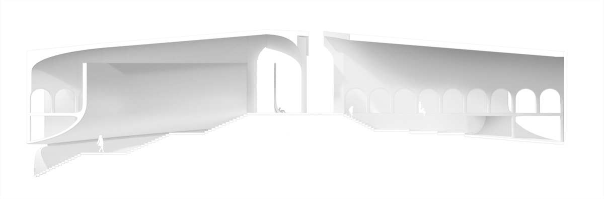
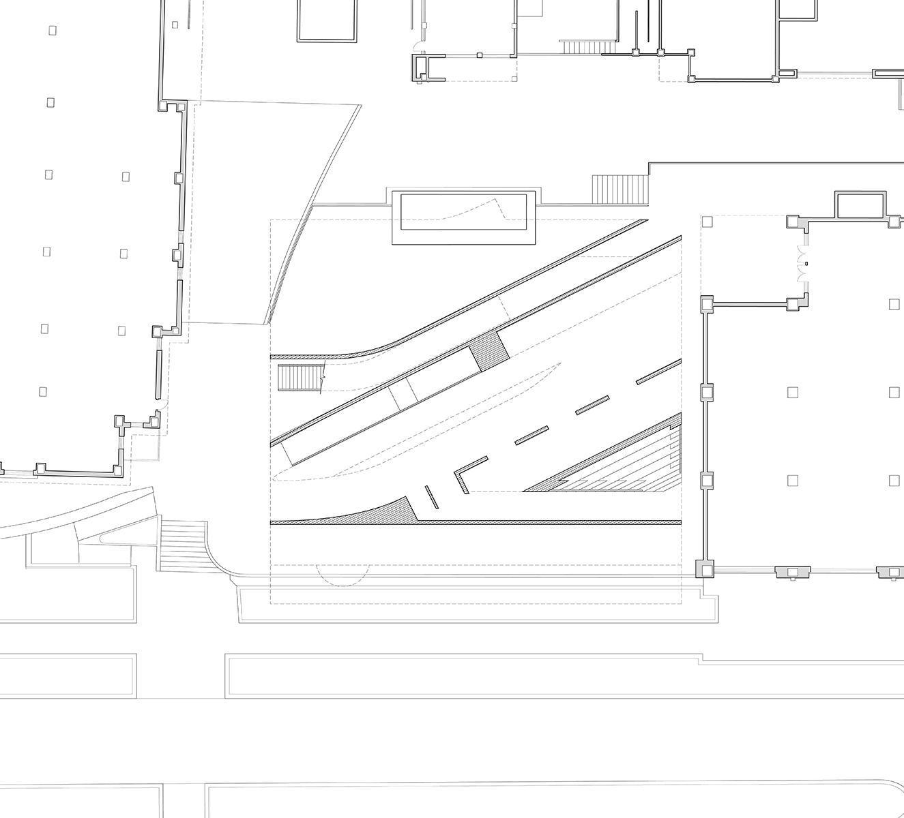
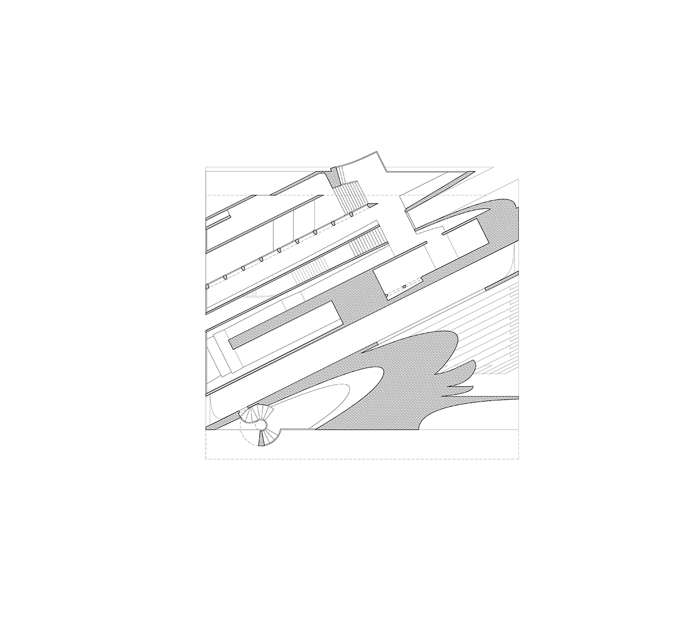

Bookless
Individual Project
Bookless Library
2015
While the idea of a library without books is certainly not new, its prevalence in current society has increased steadily. As the latest generation matures with the aid of digital media and online networks, the once heralded pastime of reading books has waned as schools provide their students with an increasing stream of electronics. There are numerous examples to be found of libraries holding only digital media, yet the shift from print to the digital can essentially be simplified to an advancement in technology, rather than a change in paradigm. This design explores the idea of revolution and change.






